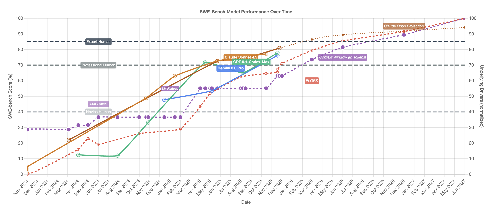

Make your own projection
Year 2025 has been a remarkable year. December 2024 we propeller heads were generating code with Anthropic Claude Sonnet 3.7 model. That was the new thing beating the previous Sonnet quite clearly. We had the ChatGPT 4-o series that could also churn out code.
SWEBench is one of the benchmarks of agent-based code generation. This is the most cited score among many benchmarks of coding abilities of LLMs.
At December 2024 we were at 63% At December 2025 we are 81% At October 2024 we were at 49% !
To put these into context 49% is comparable to novice or early career software engineer. 80% can be considered a fluent professional.
Now there are no agreed ways to measure coding performance and opinion will vary. I’ll add my subjective feeling. Current best-in-class agentic coding tools easily surpass my peak performance in my career. I used to be quite programmer way back then.
Linear scaling on non-linear compute
I wanted to make the argument to “make your own projection” at summer. I realised there is huge scaling at hand.
So I coded a small app that both researches the scaling and plots it nicely. That became the site at: https://anttitevanlinna.github.io/swe-bench-progression/
Here's the main picture of the site:

Compute has scaled non-linearly. It is on “roadmap” with Nvidia that compute scales from current 15 PFlops to 100 PFlops by end of 2027. Context lengths have gone from 100K to 200K to 1M and now up to 2M.
I can only see that code generation quality has scaled linearly over the last 18 months. We went from curiosity to deploy to main operations in months.
Make your own prediction - However much I talk, I will not convince you. Eventually you have to make your own evaluation.
It has been a year of change. Who thinks the pace will slow down?
Deployment will only speed up innovation
It has been really interesting to watch the innovation moving from propeller-head innovators to early adopters. LLMs crossed the chasm in business in remarkably short time. Now we have in some ways half the white-collar workforce in Finland moving forward.
The application is in my opinion mostly limited by skills and imagination. But those will build over time - surprisingly quickly. Assume months not years.
Then we enter the period of the majority of workforce innovating on ever-improving tools. The pace of innovation is not going to diminish.
Keep yourself fresh. We are in for a ride. Don’t believe me. Make your own prediction.